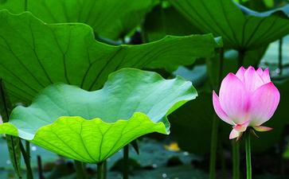

放生就是落实《法华经》,大家看《法华经》“开权显实,开迹显本”,佛说自己的前生某一世是常不轻菩萨,常常恭敬礼拜佛门在家出家四众,口说:“我不敢轻慢汝等,汝等皆当做佛。”四众经常见他这样子,就讨厌他,甚至有人还打他,他就躲得很远礼拜,口称:“我不敢轻慢汝等,汝等皆当做佛。”后来他先做佛了,就是为我们传播教法49年的释迦牟尼佛。
我们修行人,平时最难做的就是这点,不能平等对待三世佛,我们一般对人是比较难以恭敬的,没有恭敬何谈清净。实在来说,对人恭敬还不难,对畜生恭敬更难。只有放生的时候,我们看到师兄们对畜生是无比的慈悲恭敬,甚至有师兄给畜生礼拜磕头都见过。放生的时候慈悲恭敬具足,就是悲智双运。恭敬属于智慧范畴。这是比常不轻菩萨做到的还难啊。如此功德,何可思议?
“放生就是契入落实《地藏经》《孝经》《报恩经》《梵网经》《金刚经》。”放生是放自心未来诸佛,放开心灵,明了自心。我们都有过放生过程中被佛菩萨灌顶的经历;都有过平时念着没有味道的“自性众生誓愿度”,在放生时候念,念上一句,就顿然落泪的体会;都有过放生回来,念佛念经清净舒畅的过程。这是消除业障,打开自性之窗的经历。《地藏经》明一切众生都是过去父母未来佛;《佛说父母恩重难报经》明父母十恩,父母恩易报,父母恩难酬;《梵网经》说:“我是已成佛,汝是未成佛,常作如是信,戒品已具足。”
在我们放生过程中,这些都在真切的落实,我们的行为,传达着成佛作祖的信号,我们的心念,在心心流入如来果海。最后的回向,此功德助所有众生同生极乐世界。是圆满了我们在放生过程中的不足,做到一切功德圆满布施。放生能在放的时候清净真诚;放过后不居功,能够忘记,则落实了《金刚经》,做到了不住相布施。
放生人,要让自己的心和如来果海相应,多看祖师语录,开启智慧,不要念念自私。在俗鄙的念头下放生,虽有无量功德,但是却长期无法破一分半点的我执,则永远不知道佛法大海的味道。佛法是海,得到一滴水也是无穷受用,安乐和自在难以形容。放生的时候,清净的心去放生,可以看到随着一筐筐的动物或鱼类被放,你的业障随之减轻,光明和智慧降临,每放一桶就是一片佛光照来,确定无疑,千真万确。放生的时候,照片出现过莲花(2008年底广州黄沙放生),和打佛七的时候,海青上面出现极乐世界的境界(2009年东林寺院)非常相同,所以放生也是念佛三昧。念佛人要多多放生,发大心放生,发誓去毕生大放生。憨山大师说过:“放生兼念佛,决定上品会。”放生功德必须回向往生极乐世界。此外无所求,姻缘事业等听凭佛菩萨安排,方为正信佛子。
太多放生的利益文章,固然劝化大量人放生,但是也让佛教世俗化。我们学佛念佛,是要修出莲花般的品质,让人肃然起敬,感化世人,净化娑婆。不要怕人不理解,淤泥永远不会理解莲花,虽然他们生长在一起。念佛的时候,我们其实是在莲华里念的,也是在阿弥陀佛的心中念佛,母子相忆,毕竟相逢。阿弥陀佛如慈母一样,我们念佛,阿弥陀佛大欢喜,同时将欢喜传递给我们。因怕我们离开,我们念佛的时候,阿弥陀佛在我们六根门头说最上微妙法来摄取我们,我们听而不听,不听而听,我执逐渐淡化,智慧不断升华。
阿弥陀佛告诉我们:“你从来没有得到过什么,也从来没有失去过什么。”知道了这个,我顿时放弃了很多忧虑,很多患得患失。其实在人生中,我们得不足喜,失不足悲。因为得失都是假象。阿弥陀佛大慈悲,知道我忧虑怕自己的孩子受伤,怕失去财富,怕房子价格下降,所以这样告诉我。佛法的快乐自在,念佛的安详,充实,喜悦,多少人能知?劝告放生师兄别修自己的养鱼池(代表我执所修的有限福报),要让心心融入如来果海,念念是佛,慈悲放生。则未来您的福分那才是不可思议。
放生的功德,师兄们都体会过了,即使是丝毫无法理解和契入经典或佛号的初学也非常明显的感受到智慧和福分。我放生6年多,智慧和福分增加的很快。有师兄问我:“您的智慧和福分是命里的还是念佛放生修来的?”我告诉他两者都有,都不可只执一边。修来的福分很明显,绝对不可否认。既然要知道带有分别妄想去放生也得最低的人天福分,但是也不要去过分强调这些。这些不根本,难以给众生带来永久真实的利益。只有《无量寿经》告诉大家念佛往生,要给众生真实的利益。
我以前放生得到的巨大福分没有用好,反而成了我享受人生,增加我执,和吹嘘的资本,福生祸生,所以六道的东西都是不根本。所以放生是回向净土,是修慈悲智慧,是六度,这样的放生,就超越了人天的境界。别用人天的心量去放生,别把鱼放到鱼塘里。这都是我曾经的毛病。但是我自私俗鄙的放生,放久了,也开启了些智慧,这就是佛菩萨先用欲钩牵的大智慧的所在。
放生是念佛的助行,不可颠倒,是历代祖师所说,念佛若能以放生为助行,则往生上品。别满足一些放生带来的福报,那也会带来灾难。福大则祸大,要修行经教,放弃我执,就会在念佛中得大智慧。阿弥陀佛!